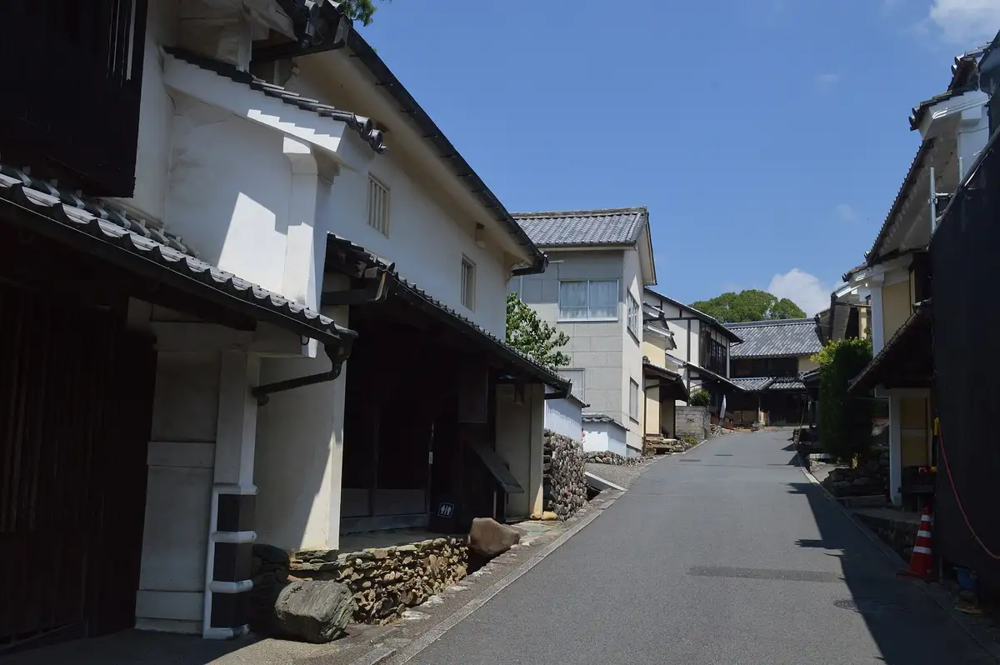
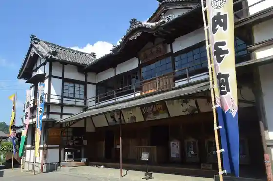
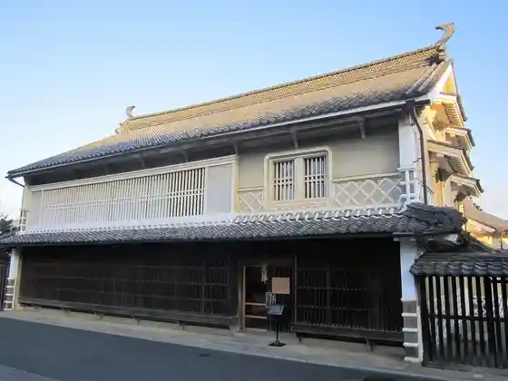
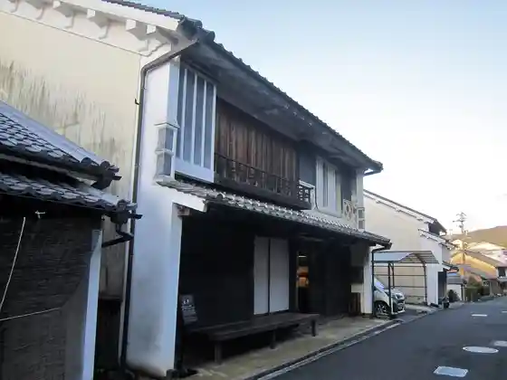
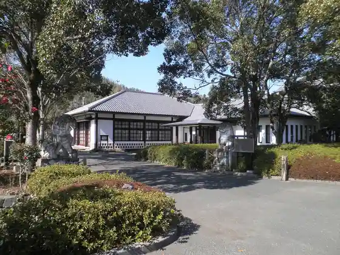

Uchiko
Uchiko · Ehime
Uchiko
Highlighted on the Ehime map.

Stay
HOTEL AZ Ehime Uchiko Mise
HOTEL ONLYONE
Oberuju Uchiko
Uchiko no Yado Kyu
Uchiko no Yado Shoku
Uchiko no Yado Kokoro
Uchiko no Yado Tsumugi
Uchiko no Yado Niju
Uchiko no Yado Kasuri
Uchiko no Yado Hitoe
Ishidatami no Yado
Akari by 4S STAY
Ko Minka Guest House & Ba Uchiko Hare
Uchiko no Yado Naka Haga
Ted's ^
Dining
Chanko Ya Hanaikada
Resutoran Karari
Kohii Kan Kyowa
Fujiya Ryokan
Monta
Izakaya Nikori
Oda Miyama So
Go Ju Shoku Ya Kokoro
Kaba Tadashi Uchiko Mise
Kajika Tei
Zenzo
Yakitori Ichi Zen
Karari Pan Workshop
Niikura Sengyo
Kanda
Harukichi
Onsen
HOTEL ONLYONE Furo
Oberuju Uchiko Furo
Sights
Yoka City Gokoku Dentoteki Kenzobutsu Gun Hozon Chiku
Uchiko Za

Mokuro Museum Ue Haga Tei

Yoka City Gokoku Town Nami Hozon Center

Ikazaki Tako Museum

Roadside Station Uchiko Furesshu Park Karari